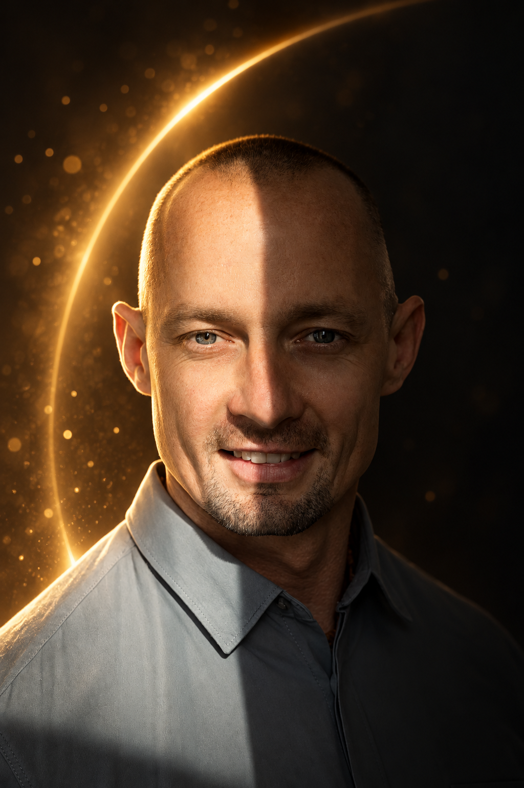
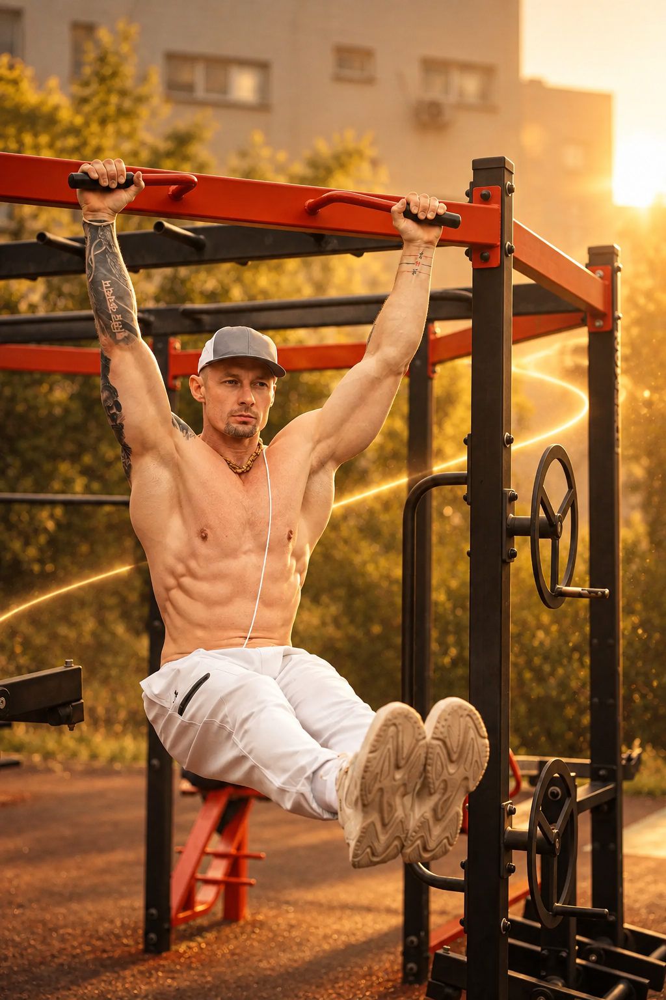
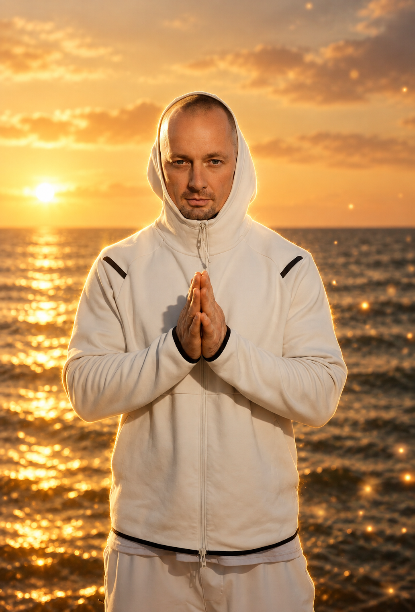

Начало
Детский дом — часть истории, сформировавшей характер и внутренний стержень.
Сила · путь · смысл
Картикея — история человека, который прошёл свой путь и теперь делится опытом, знаниями и внутренней опорой.

Кадры пути
Сила в движении, поиск внутренней опоры и свет, который хочется передавать дальше. Пять образов складываются в одну историю.


01 / История
В центре этого сайта — не перечень услуг, а человек. Его опыт объясняет, откуда появились направления работы и почему они связаны между собой.
Детский дом — часть истории, сформировавшей характер и внутренний стержень.
Дисциплина, работа с телом и опыт преодоления через движение.
Внимание к внутреннему миру, знаниям и осознанной работе с собой.
Книга, встречи и проекты, через которые личный опыт становится полезным другим.
О человеке за проектом
С девяти до семнадцати лет Константин жил в детском доме Севастополя. Там начал играть в баскетбол и тренироваться с единственной гантелью. Позже стал профессиональным спортсменом, получил образование тренера и степень магистра спортивной физиологии.
Он работал с людьми в фитнес-клубах, продолжал собственную спортивную карьеру и в 2019 году стал вице-чемпионом страны и бронзовым призёром чемпионата мира по классическому бодибилдингу. Параллельно искал ответы на вопросы о выборе, ценностях и внутренней опоре — так в его жизни появились духовная практика и изучение ведических знаний.
В 2016 году Константин вернулся в детский дом, где вырос: сначала как волонтёр и друг детей, позже как педагог. Сегодня он работает со взрослыми и подростками, а в книге «Детдомовец. Свет внутри» рассказывает свою историю, чтобы поддержать тех, кто сейчас проходит сложный путь.
Прочитать полную историюВидео / Лекция
Лекция Картикеи в университете Плеханова. Смотри прямо здесь или открой ролик на YouTube.
Смотреть на YouTubeРазвивать тело.
Укреплять дух.
Находить свет внутри —
и передавать его другим.
03 / Книга
Личная история Константина — от детского дома к поиску внутренней опоры. Книга стоит 1 000 ₽. Покупая один экземпляр, ты даришь два детям.
О книге и покупке04 / Проекты и миссия
Книга — начало знакомства. Марафоны, личная работа и социальные проекты продолжают эту историю в других форматах.